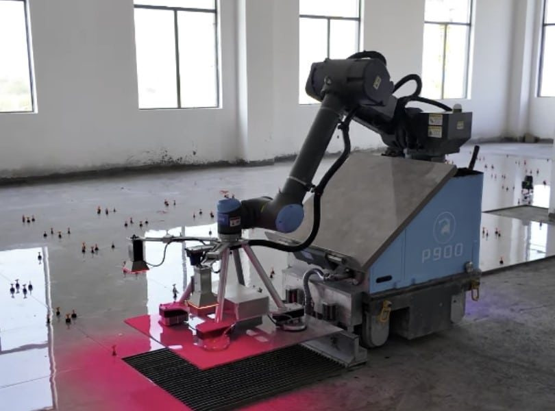
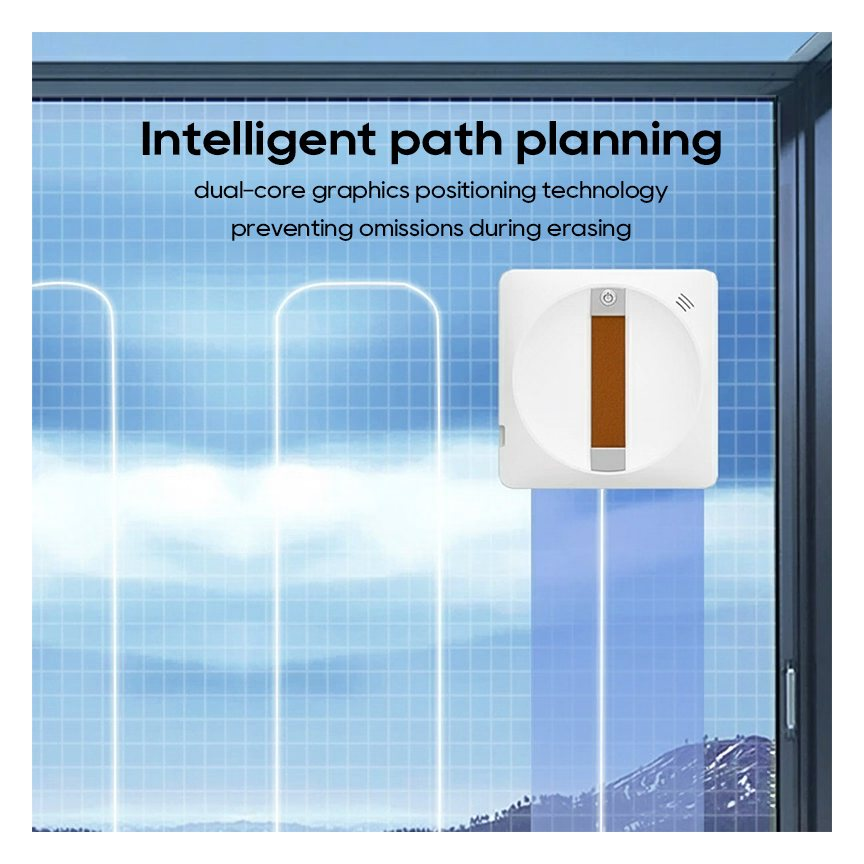
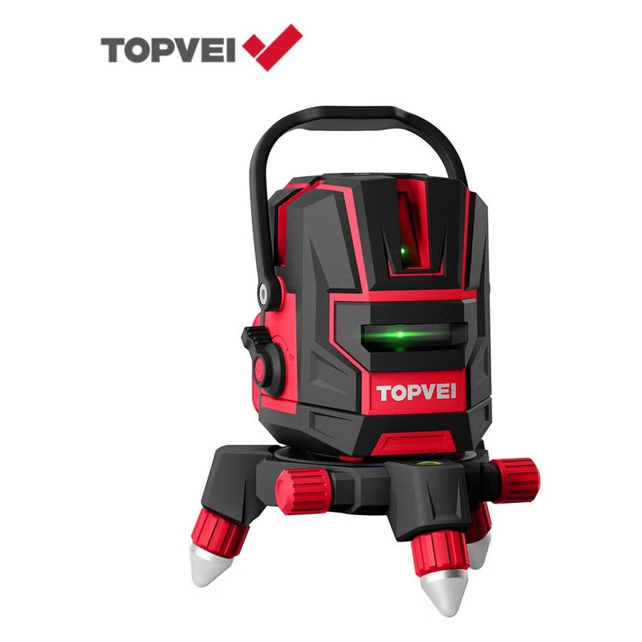

Start / Bau-Robotik / Malerroboter – Innenwand-/Decken-Spritzroboter (Spachtel + Dispersionsfarbe)

Abbildung ähnlich – zeigt den Produkttyp.
Bau-Robotik
Malerroboter – Innenwand-/Decken-Spritzroboter (Spachtel + Dispersionsfarbe)
Spachtelt und beschichtet Innenwände und Decken bis 3,2 m Arbeitshöhe automatisch mit Spachtelmasse und Dispersionsfarbe.
Der Spritzroboter spachtelt und beschichtet Innenwände und Decken bis 3,2 m Arbeitshöhe in aufeinanderfolgenden Arbeitsgängen (Spachteln, Trocknen/Schleifen, Dispersionsanstrich) mit Spachtelmasse und Dispersionsfarbe und ersetzt damit den körperlich belastenden Handauftrag auf großen Flächen. CE-Kennzeichnung samt Funk-, EMV- und Batteriekonformität ist Pflicht, bei lösemittelhaltigen Beschichtungen zusätzlich eine ATEX-Prüfung.
Technische Daten
| Arbeitshöhe | 3.200 mm |
|---|---|
| Spachtelleistung | 200 m²/h |
| Dispersionsleistung | 300 m²/h |
| Akkulaufzeit | 4 h |
| Gewicht | ca.; 600 kg |
| Abmessungen (L × B × H) | 850 × 760 × 1.780 mm |
| Bedienung | App-Fernsteuerung / Fernbedienung |
| Zolltarifnummer (HS) | 84248970 |
EU-Normen und Vorschriften
2006/42/EG / (EU) 2023/1230Maschinenrichtlinie (bis 19.01.2027) bzw.; Maschinenverordnung (ab 20.01.2027)EN ISO 12100Sicherheit von Maschinen – Allgemeine Gestaltungsleitsätze, RisikobeurteilungEN 1953Zerstäuber- und Spritzeinrichtungen für Beschichtungsstoffe – SicherheitsanforderungenEN 60204-1Sicherheit von Maschinen – Elektrische Ausrüstung von Maschinen2014/30/EUEMV-Richtlinie (EN 61000-6-2 / -6-4)2014/53/EUFunkanlagenrichtlinie (App-/Fernsteuerung)2014/34/EUATEX-Richtlinie (nur bei lösemittelhaltigen Beschichtungen)DIN 18363VOB/C – Maler- und Lackierarbeiten
Passt dazu

Weitere Produkte dieser Kategorie

Bodenfliesen-Verlegeroboter (autonom, Großformat)Verlegt Großformatfliesen autonom im Dünnbett auf ebenen Rohböden und entlastet Fliesenleger bei schweren Platten.

Wandfliesen-Verlegeroboter (Innenwand, Dünnbett)Verklebt Wandfliesen im Dünnbett auf vorbereiteten Innenwänden und entlastet Fliesenleger bei der kräftezehrenden Wandverlegung.

Maurerroboter (Mauerwerk-Setzroboter)Setzt Mauersteine im Verband und trägt Mörtel auf; für große Wandflächen im Hochbau mit hoher Wiederholgenauigkeit.

Wand-/Deckenschleifroboter (Spachtelflächen)Schleift gespachtelte Wand- und Deckenflächen bis 3,3–6 m Arbeitshöhe automatisch mit integrierter Absaugung.

Deckenbohrroboter (BIM-gesteuert, mit Staubabsaugung)Bohrt Dübel- und Ankerlöcher an Decken und Wänden BIM-gesteuert und mit integrierter Staubabsaugung.

Layout-/Anreißroboter (Totalstation- bzw. RTK-geführt)Überträgt CAD-/BIM-Pläne maßhaltig auf den Boden und markiert Wände, Achsen und Installationspunkte automatisch.

Betonglätt- und Estrichroboter (laserhöhengeregelt)Nivelliert und glättet frischen Estrich und Beton laserhöhengeregelt und ersetzt das manuelle Abziehen und Glätten.

Hohlbohrer SDS-plus mit Absaugung, Ø 12 mm x 350 mm (Hartmetall, für Sauger Staubklasse M); Ø 14/16 mm als VarianteHohlbohrer mit SDS-plus-Aufnahme, der das Bohrmehl durch den Schaft in einen Sauger der Staubklasse M abführt.

Mini-Prisma-System mit Prismenstab, Set (für Totalstationen, mit Verbinder, Libelle und Tasche); 360°-Ausführung auf AnfrageMini-Prisma-System mit 25,4-mm-Prisma, Dosenlibelle und Stab für Absteck- und Layout-Arbeiten mit Totalstation.

Fensterreinigungsroboter (Haushalt, Saugnapf)Saugroboter für Fenster und Glasflächen mit Nass-/Trockenreinigung.

Handheld-Wärmebildkamera (512x384, Gebäudeinspektion)Handkamera zur Erkennung von Wärmebrücken, Leckagen und Feuchte.

Elektro-Transportkarre für Baustellen (Kippmulde)Akkubetriebener Materialtransporter für Schutt, Sand und Baumaterial.

Akku-Bewehrungsbindegerät (Rebar Tier)Akkugerät, das Bewehrungskreuzungen automatisch mit Bindedraht verbindet.

Rücken-Exoskelett (Power Assist Suit, Industrie)Tragbare Hebehilfe zur Entlastung des unteren Rückens.

Selbstnivellierender 360°-Linienlaser, grünGrüner Mehrlinienlaser zum Ausrichten von Fliesen, Wänden und Decken.